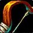
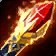
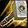
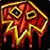
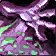

Classes · WoW Forever
As 9 classes do WoW Forever
Escolha sua classe para ver o conjunto de raide fabricado de cada especialização, a profissão que faz, os bônus e os conjuntos de masmorra que servem pra você enquanto upa.

Druida
Couro · tier set fabricado com Couraria · 4 conjunto(s) de raide

Caçador
Malha · tier set fabricado com Couraria · 1 conjunto(s) de raide

Mago
Tecido · tier set fabricado com Alfaiataria · 1 conjunto(s) de raide

Paladino
Placa · tier set fabricado com Ferraria · 3 conjunto(s) de raide

Sacerdote
Tecido · tier set fabricado com Alfaiataria · 2 conjunto(s) de raide

Ladino
Couro · tier set fabricado com Couraria · 1 conjunto(s) de raide

Xamã
Malha · tier set fabricado com Couraria · 3 conjunto(s) de raide

Bruxo
Tecido · tier set fabricado com Alfaiataria · 1 conjunto(s) de raide

Guerreiro
Placa · tier set fabricado com Ferraria · 2 conjunto(s) de raide